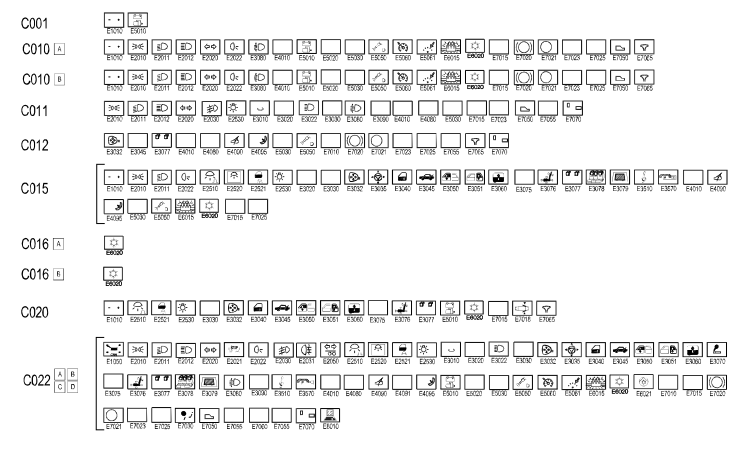
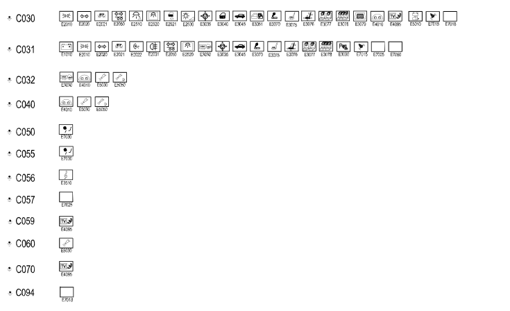

E1020 EARTHS WIRING DIAGRAM
- Path
- Electrical equipment > ELECTRICAL FUNCTIONS > E10 POWER SUPPLY AND EARTHS > E1020 EARTHS > E1020 EARTHS WIRING DIAGRAM
- Kind
- topic
- Applies to
- all engines; all production periods
- Interactive page
- https://sloeber94.github.io/elrnDB-lThss/en/#/841003159
Applies to: all engines; all production periods
Wiring Diagram


Components
Component code | Name | Assembly reference |
|---|---|---|
Battery earth | - | |
Left front earth | - | |
Right front earth | - | |
ABS front earth | - | |
Driver's dashboard earth | - | |
Air conditioning unit earth | - | |
Passenger dashboard earth | - | |
Centre dashboard earth | - | |
Left rear earth | - | |
Right rear earth | - | |
Rearscreen earth | - | |
Earth on engine | - | |
Air Bag system earth | - | |
Side Bag system earth | - | |
Amplifier earth | - | |
Electric brake earth | - | |
Radio diversity earth | - | |
TV diversity earth | - | |
Injection control unit earth | - | |
TV tuner earth | - | |
Passive entry aerial earth | - |
Topics linked from this page (21)
- C001 Battery earth
- C010 Left front earth
- C011 Right front earth
- C012 ABS front earth
- C015 Driver's dashboard earth
- C016 Air conditioning unit earth
- C020 Passenger dashboard earth
- C022 Centre dashboard earth
- C030 Left rear earth
- C031 Right rear earth
- C032 Rearscreen earth
- C040 Earth on engine
- C050 Air Bag system earth
- C055 Side Bag system earth
- C056 Amplifier earth
- C057 Electric brake earth
- C058 Radio diversity earth
- C059 TV diversity earth
- C060 Injection control unit earth
- C070 TV tuner earth
- C094 Passive entry aerial earth